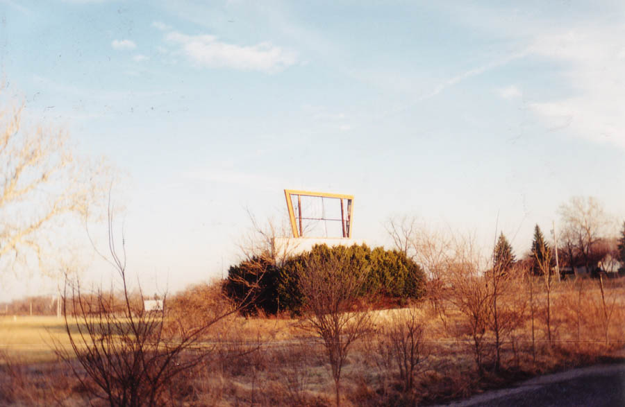
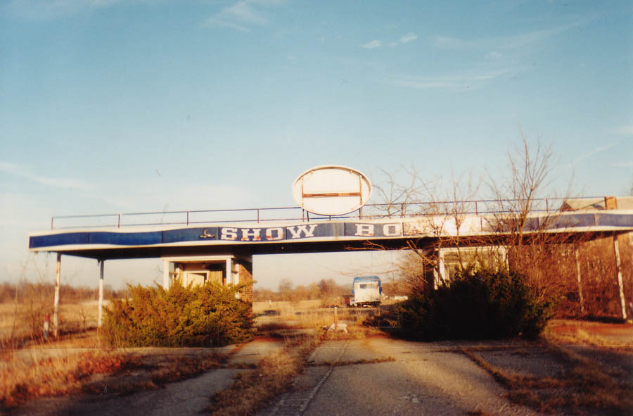
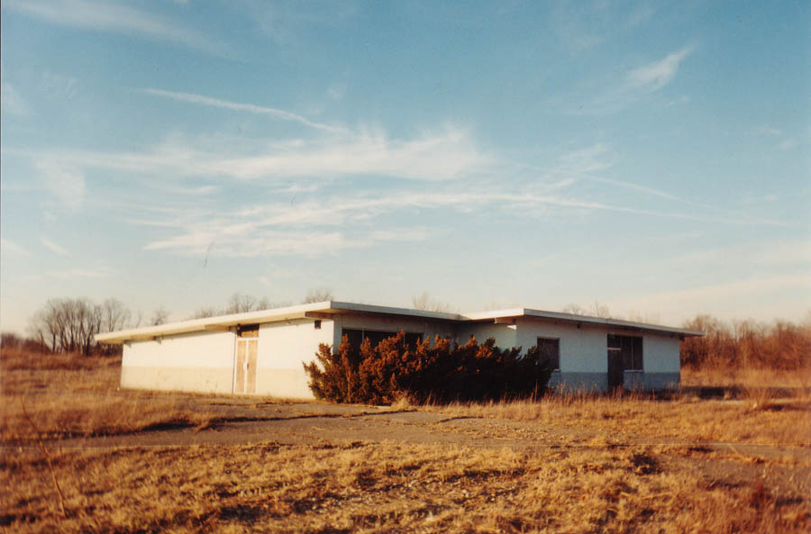
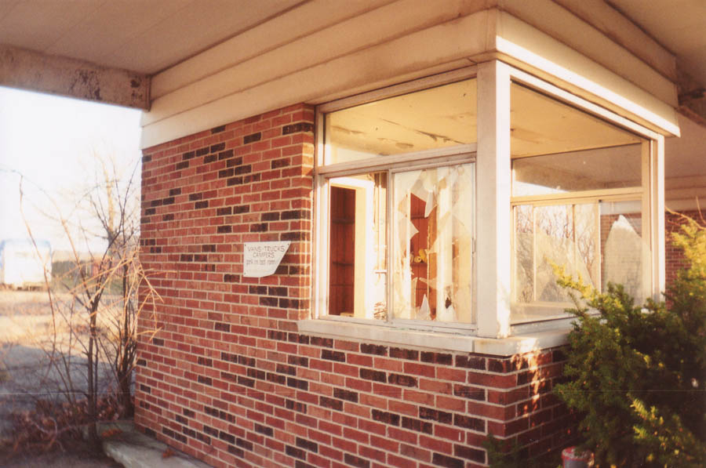
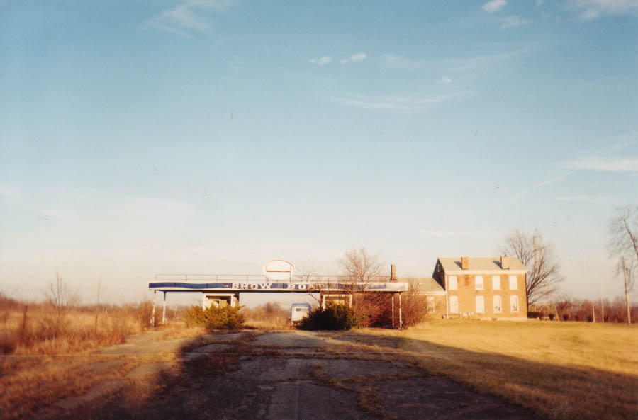
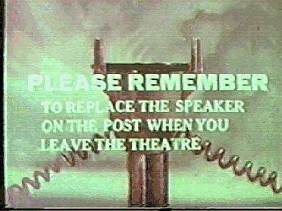

The second abandoned drive-in movie theater I've come across in Ohio is the Show Boat, located just east of Springfield on Route 40. It's an easy one to find if you're a drive-in fan, because it happens to be located directly across the highway from Springfield's famous Melody, the drive-in with the cool multi-colored flashing lights. The Melody seems to be doing all right; the Show Boat, like the Heath Drive-In, Lake Drive-In, and dozens of others throughout Ohio, didn't make it.

One thing noticably missing from the Show Boat is the screen. The speaker poles are also long gone. But there is the box office, complete with canopy, as well as the concession stand, and the marquee, nearly obscured by untrimmed bushes on both sides.

The area where people once parked to watch the movie is now an overgrown, potholed field with the boarded concession stand at the end of a few crumbling asphalt driveways you can't even tell exist unless you're standing on them. The screen must have been close to the highway, situated at an angle.

By far the weirdest thing about the remains of the Show Boat is that there is an occupied home right beside the shattered box office. It's not just a trailer, either; I think the house might have been there when the Show Boat was still showing movies, which would have been a dream come true for any kid with an upstairs bedroom. Their driveway is also the old driveway leading into the theater. If I were these people, I would trim the bushes around the marquee and put something up like NOW SHOWING: THE JOHNSON FAMILY. When you had company you could make it a double feature.
For some extra details on the Show Boat I owe a thank you to a website contributor, who wrote to me with this information about the days when movies still played here:
I just saw the page you have about the old Show Boat Drive-In on Route 40 in Springfield, OH. I used to go there and the Melody Cruise-In (right across the road) almost every weekend back in the 70s and 80s. They were two favorite hangouts for me and some of my old high school friends. We used to have a lot of fun there in the dark with our dates! I'll leave the rest of that remark to you imagination.
Anyway, the Show Boat Drive-In did have their movie screen set at an angle, but with the way they had it positioned, cars would stop along Route 40 and watch the show instead of paying to go in and see it. It could be heard very clearly from the road. That used to cause a lot of headaches for the State Highway Patrol, who used to have their patrol post just down from the drive-in on the other side of the road. They used to constantly run people off that parked by the road to watch the movie. If my memory serves me right, I think the movie screen was taken out by a small tornado back in the late 80s or early 90s. I'm in my 40s now and that happened a while back, so my memory is kinda foggy and I'm not 100% sure that's exactly what happened to it. I don't know what happened to the speakers and poles. I'm not sure if it's still there, but the concession stand used to have a huge showboat in a glass case that was attached to the wall.
Oh - the house that sits close to the entrance was where the caretaker used to live. Or so I was told.

As far as I know, this little piece of Route 40 americana is still standing (minus the movie screen). I visited in March of 2002. If you ever decide to catch a movie Springfield's Melody Drive-In (and you should), get there early and visit the lesser-known ozoner across the street.
Ohio's Forgotten Drive-Ins
40 East Twin Drive-In
The Heath Drive-In
Hocking Theater Drive-In
Kingman Drive-In Theater
The Lake Drive-In
The Leatherwood Drive-In
The Linden Air Drive-In
The Show Boat Drive-In
The Skyline Drive-In

Back
forgottenohio@yahoo.com